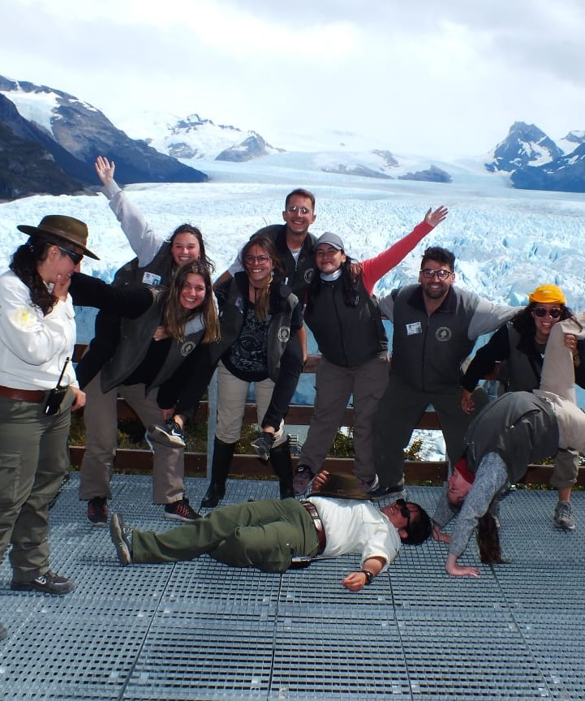

Testimonios:
Testimonio Micaela De Luca:
A principios de este año, tuve la oportunidad de vivir una de las experiencias más increíbles y transformadoras de mi vida: ser voluntaria en el Parque Nacional Los Glaciares, Santa Cruz.
Un sueño que venía gestando hace ya tiempo, pero que me costó materializar por la falta de tiempo y de dinero para concretarla. Luego de muchísimo trabajo, ahorros, planificación, y de valentía para emprender mi primer viaje sola, tanto tiempo, tan lejos (y en medio de un duelo amoroso), me animé y salté a la aventura. Lo que encontré me dejo sin palabras. Un bosque en su estado más prístino, fauna nativa al alcance de la vista, un lago cristalino. y un tempano gigante y azul flotando en el. Un paisaje cuya belleza, me es difícil relatar con palabras que le hagan justicia. El trabajo de voluntario en esta seccional, no es duro. Pero si es muy apreciado por parte del personal del parque, que se ve atareado por la mayor afluencia de turistas; e incluso por la misma gente, que agradece enormemente que contribuyamos a mantener en condiciones, los paisajes que les inspiran tanto.
El trabajo en equipo es una necesidad diaria, y acercarte a descubrir el parque con tus compañeros enriquece la experiencia, te permite aprender más rápido la dinámica del lugar y disfrutar de cada día.
La guía de las Guardaparques, permite aprender y desarrollar con éxito, habilidades que difícilmente encararías en tu casa. Desde el manejo de herramientas eléctricas para trabajar la madera (lo cual, me pareció exageradamente relajante), hasta practicar ingles cuando no te queda otra opción, para comunicarte y hacerte entender con los visitantes. El mes se pasa rápido, por eso para poder llegar a hacer todo lo que ofrece este voluntariado, te recomiendo revisar los cuadernitos que están debajo de la barra de madera de la cocina. Donde encontrarás la experiencia y relatos divertidísimos de muchísimos voluntarios que decidieron alejarse un rato del internet, para encontrarse consigo mismos y para conocer a todo el grupo.
Creo que muy pocos pueden decir que han tenido la gracia de vivir lo que nosotros. Apreciar el Glaciar Moreno al amanecer y atardecer, con luna llena…Observar la vida desde una perspectiva cíclica, y aunque sea por un rato, sentirte parte del paisaje.
Por un tiempo, le entregue mi cuerpo y mi alma a este lugar. Y a cambio, el me dio algo difícil de describir. Paz absoluta, esperanza, unos compañeros y nuevos amigos que nunca voy a olvidar, y la confianza en mí misma que tanto necesitaba para seguir adelante…

Soy Melanie Matalón y fui voluntaria en el Parque Nacional Los Glaciares en Enero del 2022. En lo personal, considero la experiencia del voluntariado como una posibilidad para no sólo conocer un área natural protegida sino también, para entender su historia y las problemáticas actuales que podemos ver en esa zona, que van desde lo ambiental hasta lo jurídico-político.
Por otra parte, la considero como una experiencia hermosa ya que pude conocer a un grupo de personas increíbles de diferentes partes del país, haciendo referencia tanto a voluntarios/as como a guardaparques. Durante todo el mes, convivimos juntos/as lo cual llevó a que nos conociéramos en profundidad y compartiéramos un montón de momentos únicos e inolvidables. Hoy en día, habiendo pasado ya casi un año recuerdo ese mes con mucha felicidad. Definitivamente es una experiencia que volvería a repetir y recomendaría a todo el mundo a que la haga porque es inolvidable
Testimonio Micaela De Luca:
Soy Melanie Matalón y fui voluntaria en el Parque Nacional Los Glaciares en Enero del 2022. En lo personal, considero la experiencia del voluntariado como una posibilidad para no sólo conocer un área natural protegida sino también, para entender su historia y las problemáticas actuales que podemos ver en esa zona, que van desde lo ambiental hasta lo jurídico-político.
Por otra parte, la considero como una experiencia hermosa ya que pude conocer a un grupo de personas increíbles de diferentes partes del país, haciendo referencia tanto a voluntarios/as como a guardaparques. Durante todo el mes, convivimos juntos/as lo cual llevó a que nos conociéramos en profundidad y compartiéramos un montón de momentos únicos e inolvidables. Hoy en día, habiendo pasado ya casi un año recuerdo ese mes con mucha felicidad. Definitivamente es una experiencia que volvería a repetir y recomendaría a todo el mundo a que la haga porque es inolvidable
Testimonio:
Testimonio...: